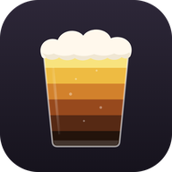

100+ beer styles
Lagers, pilsners, bocks, wheat beers, pale ales, IPAs, bitters, porters, stouts, sours, wild and specialty beers.

BeermanacBeer styles guide, offline
Pilsner or Helles? Porter or Stout? Explore 100+ beer styles with colour, strength, bitterness and the key differences between neighbours. A pocket encyclopedia for newcomers and enthusiasts alike.
Every style in its real colour: the glass on each card is tinted by the style's SRM.
Every style card has two layers: a short, friendly overview on top and the technical details below.
Lagers, pilsners, bocks, wheat beers, pale ales, IPAs, bitters, porters, stouts, sours, wild and specialty beers.
ABV, IBU and SRM on one shared scale, so you can compare styles at a glance.
The key differences from similar styles, with one tap to jump between them.
In plain words, plus food pairing ideas for every style.
Commercial examples from Ukraine and across Europe, and a local style beyond the classic guidelines: Ukrainian Golden Ale.
OG, FG, °Plato, fermentation type, history and ingredients in an expandable technical section.
Search by style name in English or Ukrainian. Typos and accents are fine.
All content lives on your device. No sign-up, no internet needed, at a beer festival or in the mountains alike.
A clean native iOS design that follows your system theme, with Dynamic Type and VoiceOver support.
Everything is free. If Beermanac helps you, you can buy the author a glass, a pint or a whole barrel. Tips unlock nothing extra.
About the data. Style statistics (ABV, IBU, SRM, gravity) are based on the publicly available BJCP 2021 Beer Style Guidelines. All descriptions are written independently for Beermanac. Beermanac is not affiliated with or endorsed by the BJCP.